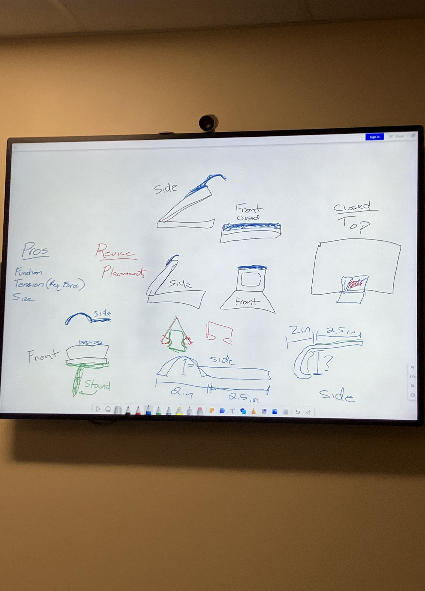
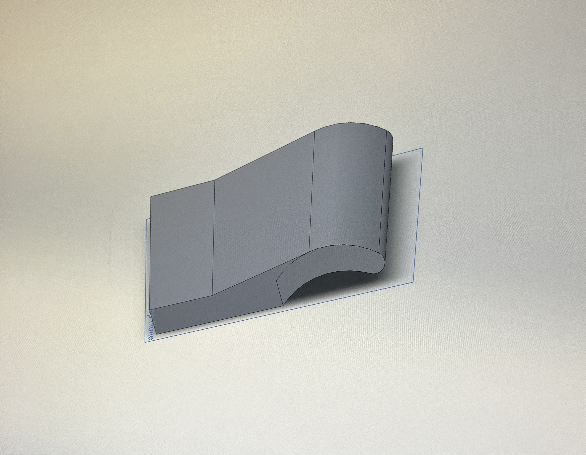
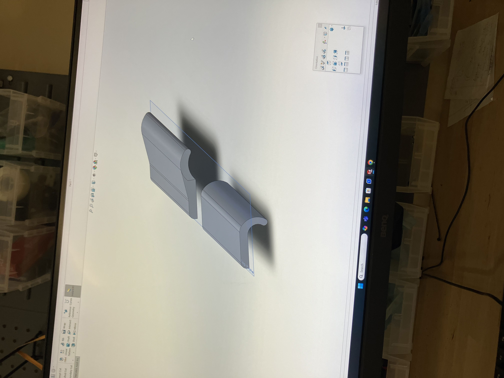
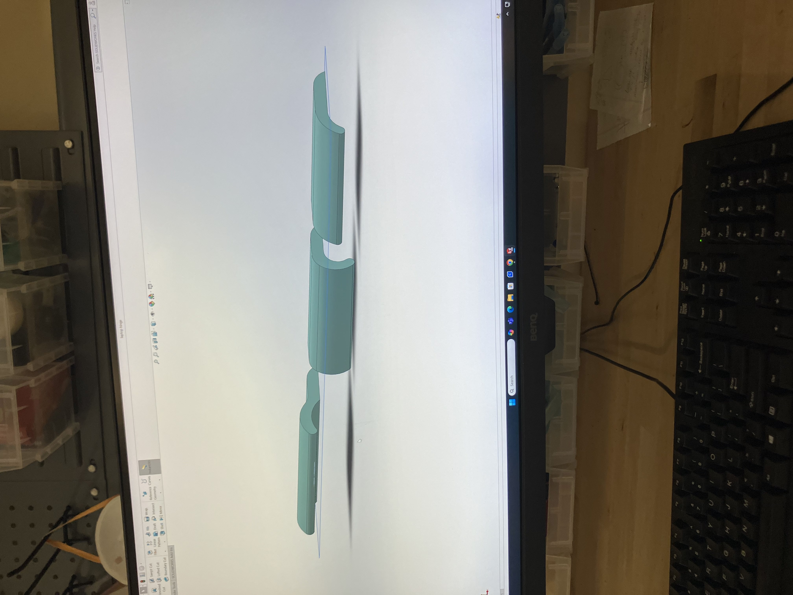
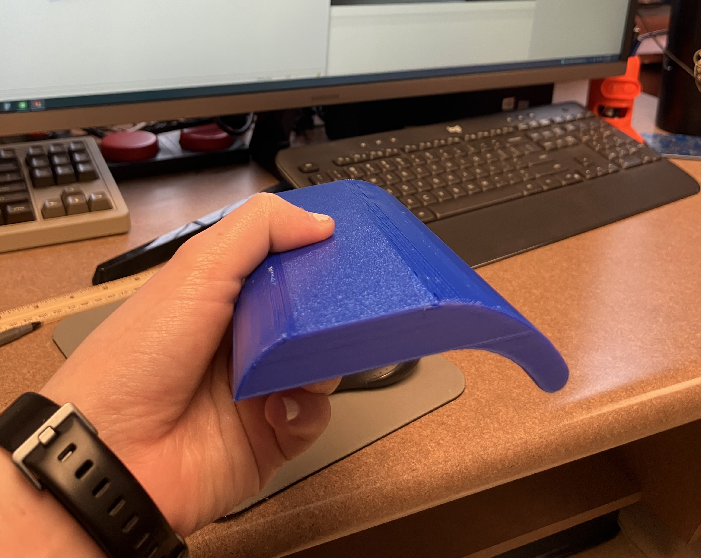
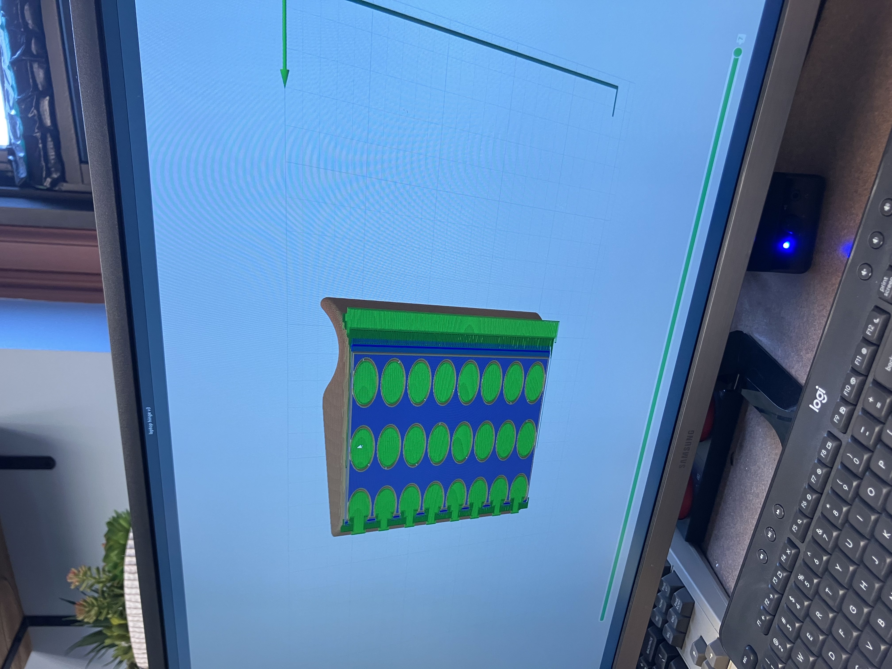

Overview
A custom laptop grip for a user with limited hand mobility, designed and built during an internship. I checked in with the user at several points along the way.
Add your role, the organization, and how long the project took.
The need
Add what was hard for the user before, in their words if you have them.
Working with the user
Each prototype was shaped by the user’s feedback, so I checked in at multiple stages rather than only at the end.
Add what you asked at each check-in and what changed because of it.
“Add a short quote from the user, with their permission.”
Process
I moved from initial sketches to several physical prototypes before settling on a final design.
Add why each prototype changed, and what you tested.






Final product
Add how the finished grip works and how the user responded.
What I learned
Add what designing with a real user taught you.